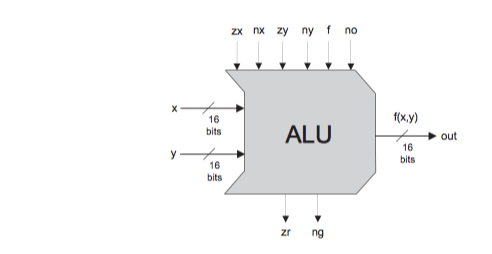
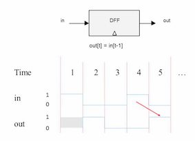
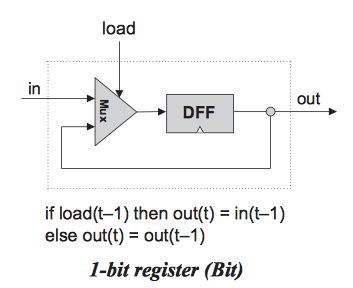
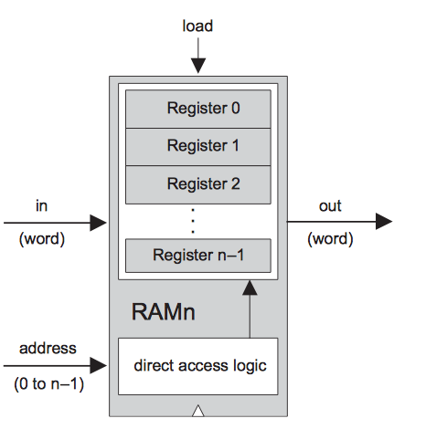
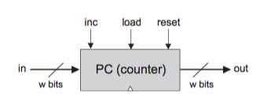
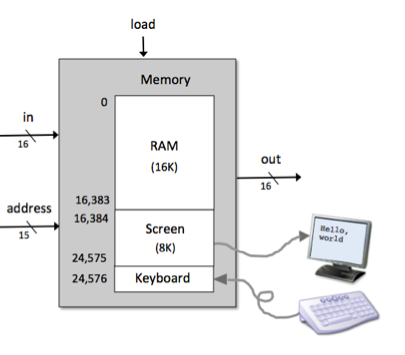
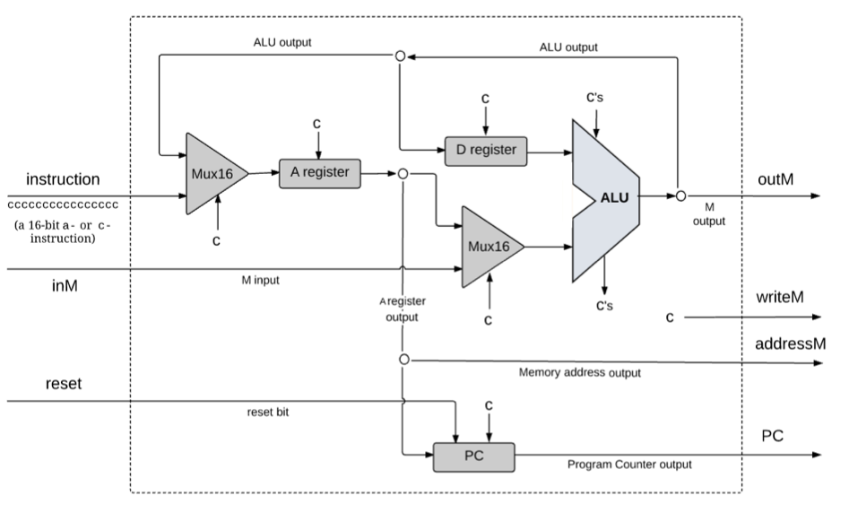

CMU 213 Introduction to Computer Systems
CMU 213 Introduction to Computer Systems可能是世界上最受欢迎的一门课。与这门课对应的课本CSAPP在全球被广泛采用，也被无数学生拜读。课程内容涉及广泛、由浅入深，是进入计算机科学的最佳课程，也是各种击破BAT笔试题的必备良药(这篇帖子描述了笔试题所对应的章节)。
非常幸运的是，CMU(Carnegie Mellon University)在网上分享了上课视频和其他所有资料，点击这里观看。
课程资料：
下面是课程笔记：
待续。。。。。
Nand2Tetris: The elements of computing systems
- 1.布尔逻辑 Boolean Logic
- 2.布尔运算 Boolean Arithmetic
- 3.时序逻辑 Sequential Logic
- 4.机器语言 Machine Language
- 5.计算机体系结构 Computer Architecture
Nand2Tetris 计算机系统要素是一门教你从零开始构建现代计算机的课程。该课程已经在Coursera上开设(分为上下两门课程)，有免费的课本和课程需要的代码，也有专门的论坛来交流学习，课程相关资源如下：
- Coursera Course Part1
- Coursera Course Part2
- Nand2Tetris Project Homepage
- Nand2Tetris Questions and Answer Forum
- Textbook: The elements of computing system
该课程适合学生掌握了计算机入门课程和数据结构以后学习，课程涉及布尔逻辑及运算、机器语言、计算机体系结构、汇编、虚拟机、编译器、操作系统。课程内容与CMU的深入理解计算机系统不一样，个人感觉涉及面更广、更加注重实战。
下面是课程的简单总结：
1.布尔逻辑 Boolean Logic
多通道/多位Multiplexor: 一个拥有m个通道、每个通道数据宽度为n位的multiplexor选择器，将m个n位输入变量中选择一个并从其单一的n位输出总线上输出。可以用k个控制位来指定这个选择(\(k=\log_2 m\))。
例：4通道16位的multiplexor(4-way Multiplexor):

多通道/多位Demultiplexor: m通道、n位的demult
iplexor从m个可能的n位输出通道中选择一个n位的输入变量。可以用k个控制位来指定这个选择(\(k=\log_2 m\))。
例：4-way Demultiplexor:

/**
* 4-way demultiplexor:
* {a, b, c, d} = {in, 0, 0, 0} if sel == 00
* {0, in, 0, 0} if sel == 01
* {0, 0, in, 0} if sel == 10
* {0, 0, 0, in} if sel == 11
*/
CHIP DMux4Way {
IN in, sel[2];
OUT a, b, c, d;
PARTS:
DMux(in=in, sel=sel[1], a=c1, b=c2);
DMux(in=c1, sel=sel[0], a=a, b=b);
DMux(in=c2, sel=sel[0], a=c, b=d);
}
2.布尔运算 Boolean Arithmetic
半加器(Half Adder): 进行二进制数加法的第一步就是要能够对两个二进制位进行相加。我们把结果的LSB(Least Significant Bit)称为sum，MSB(Most Significant Bit)称为carry。

HDL语言：
CHIP HalfAdder {
IN a, b; // 1-bit inputs
OUT sum, // Right bit of a + b
carry; // Left bit of a + b
PARTS:
And(a=a, b=b, out=carry);
Xor(a=a, b=b, out=sum);
}
全加器：用来对三个位相加。

HDL 语言：
CHIP FullAdder {
IN a, b, c; // 1-bit inputs
OUT sum, // Right bit of a + b + c
carry; // Left bit of a + b + c
PARTS:
HalfAdder(a=a, b=b, sum=sum1, carry=carry1);
HalfAdder(a=c, b=sum1, sum=sum, carry=carry2);
Or(a=carry1, b=carry2, out=carry);
}
加法器(Adder): 存储器和寄存器电路用n位的形式来表示整数，n可以是16、32、64等等, 这依赖于所在的计算机平台。进行n位加法的芯片称为多位加法器(multi-bit adder),或者简称为加法器。下图为16位加法器

HDL:
CHIP Add16 {
IN a[16], b[16];
OUT out[16];
PARTS:
HalfAdder(a=a[0], b=b[0], carry=carry1, sum=out[0]);
FullAdder(a=a[1], b=b[1], c=carry1, carry=carry2, sum=out[1]);
FullAdder(a=a[2], b=b[2], c=carry2, carry=carry3, sum=out[2]);
FullAdder(a=a[3], b=b[3], c=carry3, carry=carry4, sum=out[3]);
FullAdder(a=a[4], b=b[4], c=carry4, carry=carry5, sum=out[4]);
FullAdder(a=a[5], b=b[5], c=carry5, carry=carry6, sum=out[5]);
FullAdder(a=a[6], b=b[6], c=carry6, carry=carry7, sum=out[6]);
FullAdder(a=a[7], b=b[7], c=carry7, carry=carry8, sum=out[7]);
FullAdder(a=a[8], b=b[8], c=carry8, carry=carry9, sum=out[8]);
FullAdder(a=a[9], b=b[9], c=carry9, carry=carry10, sum=out[9]);
FullAdder(a=a[10], b=b[10], c=carry10, carry=carry11, sum=out[10]);
FullAdder(a=a[11], b=b[11], c=carry11, carry=carry12, sum=out[11]);
FullAdder(a=a[12], b=b[12], c=carry12, carry=carry13, sum=out[12]);
FullAdder(a=a[13], b=b[13], c=carry13, carry=carry14, sum=out[13]);
FullAdder(a=a[14], b=b[14], c=carry14, carry=carry15, sum=out[14]);
FullAdder(a=a[15], b=b[15], c=carry15, carry=carry, sum=out[15]);
}
算数逻辑单元(Arithmetic Logic Unit, ALU): 计算一组固定的函数\(out=f_i(x,y)\),这里\(x\)和\(y\)是芯片的两个16位输入，\(out\)是芯片的16位输出, \(f_i\)是位于一个函数表中的函数，该函数表通过6个控制位(control bit)的输入位(zx, nx, zy, ny, f, no)来告诉ALU用哪一个函数来进行何种计算。

HDL:
*
* The ALU (Arithmetic Logic Unit).
* Computes one of the following functions:
* x+y, x-y, y-x, 0, 1, -1, x, y, -x, -y, !x, !y,
* x+1, y+1, x-1, y-1, x&y, x|y on two 16-bit inputs,
* according to 6 input bits denoted zx,nx,zy,ny,f,no.
* In addition, the ALU computes two 1-bit outputs:
* if the ALU output == 0, zr is set to 1; otherwise zr is set to 0;
* if the ALU output < 0, ng is set to 1; otherwise ng is set to 0.
*/
// Implementation: the ALU logic manipulates the x and y inputs
// and operates on the resulting values, as follows:
// if (zx == 1) set x = 0 // 16-bit constant
// if (nx == 1) set x = !x // bitwise not
// if (zy == 1) set y = 0 // 16-bit constant
// if (ny == 1) set y = !y // bitwise not
// if (f == 1) set out = x + y // integer 2's complement addition
// if (f == 0) set out = x & y // bitwise and
// if (no == 1) set out = !out // bitwise not
// if (out == 0) set zr = 1
// if (out < 0) set ng = 1
CHIP ALU {
IN
x[16], y[16], // 16-bit inputs
zx, // zero the x input?
nx, // negate the x input?
zy, // zero the y input?
ny, // negate the y input?
f, // compute out = x + y (if 1) or x & y (if 0)
no; // negate the out output?
OUT
out[16], // 16-bit output
zr, // 1 if (out == 0), 0 otherwise
ng; // 1 if (out < 0), 0 otherwise
PARTS:
// if (zx==1) set x = 0
Mux16(a=x,b=false,sel=zx,out=zxout);
// if (zy==1) set y = 0
Mux16(a=y,b=false,sel=zy,out=zyout);
// if (nx==1) set x = ~x
// if (ny==1) set y = ~y
Not16(in=zxout,out=notx);
Not16(in=zyout,out=noty);
Mux16(a=zxout,b=notx,sel=nx,out=nxout);
Mux16(a=zyout,b=noty,sel=ny,out=nyout);
// if (f==1) set out = x + y
// if (f==0) set out = x & y
Add16(a=nxout,b=nyout,out=addout);
And16(a=nxout,b=nyout,out=andout);
Mux16(a=andout,b=addout,sel=f,out=fout);
// if (no==1) set out = ~out
// 1 if (out<0), 0 otherwise
Not16(in=fout,out=nfout);
Mux16(a=fout,b=nfout,sel=no,out=out,out[0..7]=zr1,out[8..15]=zr2,out[15]=ng);
//if (out==0), zr=1
Or8Way(in=zr1,out=or1);
Or8Way(in=zr2,out=or2);
Or(a=or1,b=or2,out=or3);
Not(in=or3,out=zr);
}
3.时序逻辑 Sequential Logic
时钟(Clock)：在大多数计算机里，时间的流逝是用主时钟(master clock)来表示的，它提供连续的交变信号序列。其精确的硬件实现通常基于振荡器(oscillator),其在两个信号值0-1之间交替变化。两个响铃的时间间隔称为时钟的周期。
触发器(Flip-Flop): 计算机里最基本的时序单元，有多个变种。数据触发器(Data Flip-Flop, DFF)，其接口包含1比特位输入和1比特位输出。 DFF简单地将前一个时间周期的输入值作为当前周期的输出 。

寄存器(Registers): 具有记忆功能的设备，能“存储”某一时刻的值，实现经典的存储行为out(t)=out(t-1)。从另一个方面来说，DFF仅能够输出它前一时钟周期的输入，也就是out(t)=in(t-1)。寄存器分为地址寄存器(address register), 数据寄存器(data register), 程序计数器(program counter).

1-位寄存器:
/**
* 1-bit register:
* If load[t] == 1 then out[t+1] = in[t]
* else out does not change (out[t+1] = out[t])
*/
CHIP Bit {
IN in, load;
OUT out;
PARTS:
Mux(a= out1, b=in, sel=load, out=out2);
DFF(in=out2, out=out1, out=out);
}
寄存器：由1-位寄存器来构建w-位寄存器是非常简单的。所需要做的就是构建一组w比特门，然后将寄存器的load输入赋予每个门。
CHIP Register {
IN in[16], load;
OUT out[16];
PARTS:
Bit(in=in[0], load=load, out=out[0]);
Bit(in=in[1], load=load, out=out[1]);
Bit(in=in[2], load=load, out=out[2]);
Bit(in=in[3], load=load, out=out[3]);
Bit(in=in[4], load=load, out=out[4]);
Bit(in=in[5], load=load, out=out[5]);
Bit(in=in[6], load=load, out=out[6]);
Bit(in=in[7], load=load, out=out[7]);
Bit(in=in[8], load=load, out=out[8]);
Bit(in=in[9], load=load, out=out[9]);
Bit(in=in[10], load=load, out=out[10]);
Bit(in=in[11], load=load, out=out[11]);
Bit(in=in[12], load=load, out=out[12]);
Bit(in=in[13], load=load, out=out[13]);
Bit(in=in[14], load=load, out=out[14]);
Bit(in=in[15], load=load, out=out[15]);
}
内存(Memories):可以通过将寄存器堆叠起来形成 随机存取存储器 (random access memory, RAM)。在RAM上能够随机访问被选择的字而不会受限于访问顺序，即随机存取存储器中的任何字都能以相等的速度被直接访问。

RAM8:
/**
* Memory of 8 registers, each 16 bit-wide. Out holds the value
* stored at the memory location specified by address. If load==1, then
* the in value is loaded into the memory location specified by address
* (the loaded value will be emitted to out from the next time step onward).
*/
CHIP RAM8 {
IN in[16], load, address[3];
OUT out[16];
PARTS:
// Put your code here:
DMux8Way(in=load, sel=address, a=loada, b=loadb, c=loadc, d=loadd, e=loade, f=loadf, g=loadg, h=loadh);
Register(in=in, load=loada, out=outa);
Register(in=in, load=loadb, out=outb);
Register(in=in, load=loadc, out=outc);
Register(in=in, load=loadd, out=outd);
Register(in=in, load=loade, out=oute);
Register(in=in, load=loadf, out=outf);
Register(in=in, load=loadg, out=outg);
Register(in=in, load=loadh, out=outh);
Mux8Way16(a=outa, b=outb, c=outc, d=outd, e=oute, f=outf, g=outg, h=outh, sel=address, out=out);
}
RAM64:
/**
* Memory of 64 registers, each 16 bit-wide. Out holds the value
* stored at the memory location specified by address. If load==1, then
* the in value is loaded into the memory location specified by address
* (the loaded value will be emitted to out from the next time step onward).
*/
CHIP RAM64 {
IN in[16], load, address[6];
OUT out[16];
PARTS:
DMux8Way(in=load, sel=address[3..5], a=loada, b=loadb, c=loadc, d=loadd, e=loade, f=loadf, g=loadg, h=loadh);
RAM8(in=in, load=loada, address=address[0..2], out=outa);
RAM8(in=in, load=loadb, address=address[0..2], out=outb);
RAM8(in=in, load=loadc, address=address[0..2], out=outc);
RAM8(in=in, load=loadd, address=address[0..2], out=outd);
RAM8(in=in, load=loade, address=address[0..2], out=oute);
RAM8(in=in, load=loadf, address=address[0..2], out=outf);
RAM8(in=in, load=loadg, address=address[0..2], out=outg);
RAM8(in=in, load=loadh, address=address[0..2], out=outh);
Mux8Way16(a=outa, b=outb, c=outc, d=outd, e=oute, f=outf, g=outg, h=outh, sel=address[3..5], out=out);
}
计算机芯片分为两种：组合芯片(combinational chip)和时序芯片(sequential chip or clocked chip时钟芯片)。组合芯片的操作具有即时性(instantaneous)。时序芯片的操作受时钟控制，输入的改变只有在下一个时钟周期才反应到芯片的输出管脚上: out(t)=out(t-1)。

计数器(Counter): 计数器是一种时序芯片，它的状态是证书，每经过一个时间周期，该整数就增加1个单位，执行函数out(t)=out(t-1)+c，这里就是1。典型的CPU包括一个程序计数器(program couter, PC)，它的输出是当前程序中下一步将要执行的指令地址。
w-位计数器包含两个主要部分：一个常规的w-位寄存器和组合逻辑。组合逻辑用来：(a)执行计数功能；(b)根据控制位的3种不同的命令值，将计数器置于正确的操作模式。

/**
* A 16-bit counter with load and reset control bits.
* if (reset[t] == 1) out[t+1] = 0
* else if (load[t] == 1) out[t+1] = in[t]
* else if (inc[t] == 1) out[t+1] = out[t] + 1 (integer addition)
* else out[t+1] = out[t]
*/
CHIP PC {
IN in[16],load,inc,reset;
OUT out[16];
PARTS:
Inc16(in=regout, out=plusone);
Mux16(a=false, b=plusone, sel=inc, out=incout);
Mux16(a=incout, b=in, sel=load, out=loadout);
Mux16(a=loadout, b=false, sel=reset, out=toload);
Or(a=load, b=reset, out=loadorreset);
Or(a=loadorreset, b=inc, out=loadflag);
Register(in=toload, load=loadflag, out=regout);
Or16(a=regout, b=regout, out=out);
}
存储器层次结构(memory hierarchy):


4.机器语言 Machine Language
机器语言用来对底层程序进行编码，从而形成一系列机器指令。应用这些指令，程序员可以命令处理器执行算数和逻辑餐座，在内存中进行存取操作，让数据在寄存器之间传递，验证布尔表达式的值，等等。机器语言的设计目标是直接运行在指定的硬件平台上，能够对这个平台进行全面操控；与机器语言相反，高级语言具有通用性和较强的表达能力。
机器语言是整个计算机题系统意义最深奥的接口 -- 它也是硬件和软件相接的中间线。因此，既可以将机器语言看作编程工作，也可以将其看作硬件平台内部不可分割的一部分。
5.计算机体系结构 Computer Architecture
存储程序的概念：指令没有被嵌入到硬件中，而是被存储在计算机的存储设备(memory)里，当计算机载入不同的程序指令时，同样的硬件平台可以实现不同的功能。
冯·诺伊曼体系结构(概念上的):冯·诺伊曼体系结构的基础是一个中央处理单元(CPU),它与内存进行交互，负责从输入设备接收数据，向输出设备发送数据。

RAM: RAM不光存储数据和指令，还可以通过 内存映像 (Memory Maps) 在CPU和计算机输入/输出设备之间充当借口。下图中屏幕和键盘都通过内存映像与计算机平台进行接口。

CHIP Memory {
IN in[16], load, address[15];
OUT out[16];
PARTS:
DMux4Way(in=load, sel=address[13..14], a=ram1, b=ram2, c=screen, d=kbd);
Or(a=ram1, b=ram2, out=ram);
RAM16K(in=in, load=ram, address=address[0..13], out=ramout);
Screen(in=in, load=screen, address=address[0..12], out=scrout);
Keyboard(out=kbout);
Mux4Way16(a=ramout, b=ramout, c=scrout, d=kbout, sel=address[13..14], out=out);
}
CPU包括执行指令的ALU、一组寄存器和一些用于取指令和对指令解码的控制逻辑(上上图)。用来执行下面的任务：
- 指令解码(Instruction decoding):解析出指令所代表意思(指令的功能)。
- 指令执行(Instruction execution):发信号指示计算机的各个部分应该做什么工作来执行指令（指令的功能）。
- 读取下一条指令(Next instruction fetching):指出下一步执行哪一条指令（指令的功能以及ALU的输出）。

CHIP CPU {
IN inM[16], // M value input (M = contents of RAM[A])
instruction[16], // Instruction for execution
reset; // Signals whether to re-start the current program
// (reset == 1) or continue executing the current
// program (reset == 0).
OUT outM[16], // M value output
writeM, // Write into M?
addressM[15], // RAM address (of M)
pc[15]; // ROM address (of next instruction)
PARTS:
// get type of instruction
Not(in=instruction[15], out=Ainstruction);
Not(in=Ainstruction, out=Cinstruction);
And(a=Cinstruction, b=instruction[5], out=ALUtoA); // C-inst and dest to A-reg?
Mux16(a=instruction, b=ALUout, sel=ALUtoA, out=Aregin);
Or(a=Ainstruction, b=ALUtoA, out=loadA); // load A if A-inst or C-inst&dest to A-reg
ARegister(in=Aregin, load=loadA, out=Aout);
Mux16(a=Aout, b=inM, sel=instruction[12], out=AMout); // select A or M based on a-bit
And(a=Cinstruction, b=instruction[4], out=loadD);
DRegister(in=ALUout, load=loadD, out=Dout); // load the D register from ALU
ALU(x=Dout, y=AMout, zx=instruction[11], nx=instruction[10],
zy=instruction[9], ny=instruction[8], f=instruction[7],
no=instruction[6], out=ALUout, zr=ZRout, ng=NGout); // calculate
// Set outputs for writing memory
Or16(a=false, b=Aout, out[0..14]=addressM);
Or16(a=false, b=ALUout, out=outM);
And(a=Cinstruction, b=instruction[3], out=writeM);
// calc PCload & PCinc - whether to load PC with A reg
And(a=ZRout, b=instruction[1], out=jeq); // is zero and jump if zero
And(a=NGout, b=instruction[2], out=jlt); // is neg and jump if neg
Or(a=ZRout, b=NGout, out=zeroOrNeg);
Not(in=zeroOrNeg, out=positive); // is positive (not zero and not neg)
And(a=positive, b=instruction[0], out=jgt); // is pos and jump if pos
Or(a=jeq, b=jlt, out=jle);
Or(a=jle, b=jgt, out=jumpToA); // load PC if cond met and jump if cond
And(a=Cinstruction, b=jumpToA, out=PCload); // Only jump if C instruction
Not(in=PCload, out=PCinc); // only inc if not load
PC(in=Aout, inc=PCinc, load=PCload, reset=reset, out[0..14]=pc);
}
PCA基础及在Spark中的应用
主成分分析(Principal Component Analysis, PCA)主要是用来可视化数据和数据压缩。
PCA的目的是找到一组可以代表原始数据的低维数据。设原始数据为\(X\in \mathbf{R}^{n\times d}\)，有\(d\)个特征。压缩后的数据为\(\mathbf{Z=XP} \in \mathbf{R}^{n\times k}\), 有\(k\)个特征(feature)。
那么找到的这\(k\)个特征，有什么好的约束呢？
（Variance/Covariance constraints）
- 这k个特征无关，也就是说协相关矩阵除对角线以外的元素全部为0
- 应该根据特征的方差(variance)选择，越大越好。因为variance越大，越能代表feature。也就是说应该选择协相关矩阵对角元素大的feature。
所以 \(\mathbf{P}\)应该等于X的协方差矩阵的最大\(k\)个特征向量。
协方差矩阵的分布式求解方法见本博客Covariance Matrix and its solution in Spark
下面是特征分解的基础知识，可以在线性代数课本上找到：
特征分解(Eigendecomposition)是将矩阵分解为由特征值和特征向量表示矩阵之积的方法。
令 \(A\)是一个\(N\times N\)的方阵，且有\(N\)个线性无关的特征向量\(q_i(i=1,...,N)\)。这样，A可以被分解为
\[\mathbf{A=Q\Lambda Q}^{-1}\]
其中\(\mathbf{Q}\)是\(N\times N\)的方阵，且其第\(i\)列为\(A\)的特征向量\(q_i\)。\(\mathbf{\Lambda}\)是对角矩阵，其对角线上的元素为对应的特征值，也即\(\Lambda_{ii}=\lambda_i\).
那么，怎么样选择\(k\)的大小呢？一般认为保留99%或95%的variance. 由于协方差矩阵的对角元素就是对应特征向量的特征值，又是variance，所以我们选择k个对角元素，保留所要求的variance:
\[\text{find} \min k \quad \text{s.t.} \frac{\sum^k_{i=1}\lambda_i}{\sum^k_{i=1}\lambda_i} > 99\%\]
PCA in Spark
在python 中使用 numpy.linalg.eigh计算特征值和特征向量.
基本步骤如下：
- 计算协方差矩阵
estimateCovariance() - 计算主成分和对应方差
pca() - 计算保留的成分比例
varianceExplained()
def estimateCovariance(data):
"""Compute the covariance matrix for a given rdd.
Args:
data (RDD of np.ndarray): An `RDD` consisting of NumPy arrays.
Returns:
np.ndarray: A multi-dimensional array where the number of rows and columns both equal the
length of the arrays in the input `RDD`.
"""
mean = data.mean()
normalized = data.map(lambda x: x-mean)
return normalized.map(lambda x: np.outer(x, x)).sum()/data.count()
def pca(data, k=2):
"""Computes the top `k` principal components, corresponding scores, and all eigenvalues.
Args:
data (RDD of np.ndarray): An `RDD` consisting of NumPy arrays.
k (int): The number of principal components to return.
Returns:
tuple of (np.ndarray, RDD of np.ndarray, np.ndarray): A tuple of (eigenvectors, `RDD` of
scores, eigenvalues). Eigenvectors is a multi-dimensional array where the number of
rows equals the length of the arrays in the input `RDD` and the number of columns equals
`k`. The `RDD` of scores has the same number of rows as `data` and consists of arrays
of length `k`. Eigenvalues is an array of length d (the number of features).
"""
cov = estimateCovariance(data)
eigVals, eigVecs = eigh(cov)
inds = np.argsort(eigVals)[::-1]
topkComponent = eigVecs[:,inds[0:k]]
scores = data.map(lambda x: np.dot(x, topkComponent))
# Return the `k` principal components, `k` scores, and all eigenvalues
return (topkComponent, scores, eigVals[inds])
def varianceExplained(data, k=1):
"""Calculate the fraction of variance explained by the top `k` eigenvectors.
Args:
data (RDD of np.ndarray): An RDD that contains NumPy arrays which store the
features for an observation.
k: The number of principal components to consider.
Returns:
float: A number between 0 and 1 representing the percentage of variance explained
by the top `k` eigenvectors.
"""
components, scores, eigenvalues = pca(data)
return sum(eigenvalues[0:k])/sum(eigenvalues)
应用
斑马鱼(zebrafish)大脑的响应可视化。
Reference
- Machine Learning Course from Coursera. Andrew Ng
- CS190: Scalable Machine Learning